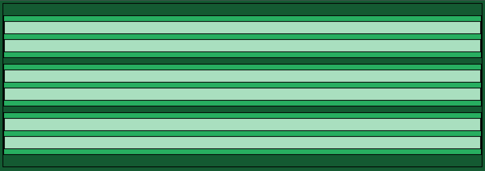
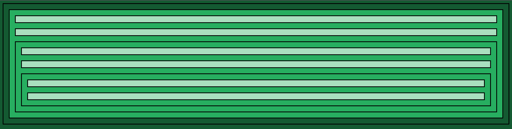
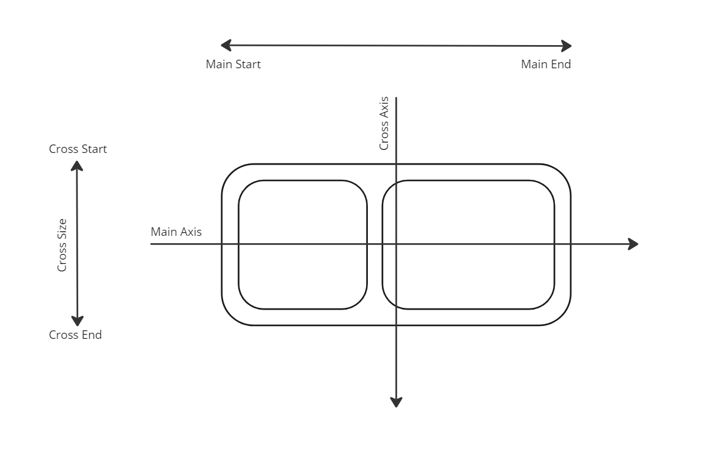

Web Development
The world wide web is the set of all resources that can be accessed on the internet via web servers and web browsers. A web server is simply a software application that serves content over the internet. A web browser is simply a software application designed to assist a user's navigation of the internet. HTML, or hyper-text-markup-language, is the language a web browser reads to display content to the user's screen. HTML is comprised of elements, all of which are coded in the general form '<opening tag></opening tag>' CSS, or Cascading Style Sheets, is the language a web browser reads to stylise html content.
Every element has a default display value of either block-level or in-line. Common block-level elements include the 'p' block-line element for paragraph, the 'div' block-line element for division, and the 'span' in-line element. A block-level element is used to store content, which can be include other block-level or in-line elements. In-line elements are used to highlight content in some way, and thus do not nest other block-level elements within themselves. If we use the break-line element <br> then we can visualise block-elements storing empty lines by color-coding them in css. Here we color-code the body as dark green, divs as light green and paragraphs as pale green. This is a very simple example of a website with three document divisions each containing two paragraphs.
This is not a sophisticated web-layout by any means, but despite its simplicity, it is still pleasing to the eye. This is because the colors conform to a color palette based on color theory. These palettes can be found online. Also note that block elements take up the entire width of the element they are nested within.
Every element has a set of properties defining the space it occupies. This set of properties is referred to as the CSS box model and includes margin (space surrounding element), border (border of element), and padding (space between an element's border and its stored content). Many unit values are used to quantify these properties. Absolute lengths including px, pt, cm, in and more. Relative lengths inherit their length from another value or element; they include em which refers to 'parent element', rem which refers to 'root element', vh and vw which refer to 1% of a viewport's height and width respectively, and many more.
We can now better visualise how elements are nested and exist spatially in relation to one another. This is, again, a very simple layout, in which we have three nested divisions in our body, each containing two paragraphs storing content.
Flexbox is a layout method for arranging elements in rows and columns. Any block-level element attributed with the 'flex' display property in css becomes a flex-container (parent element) containing flex-items (child elements). CSS 'Normal Flow' is the flow of the display of block and inline elements in the web page, which follows a vertical and horizontal 'flow' layout respectively. Flexbox 'flex-flow' directions are similar:
